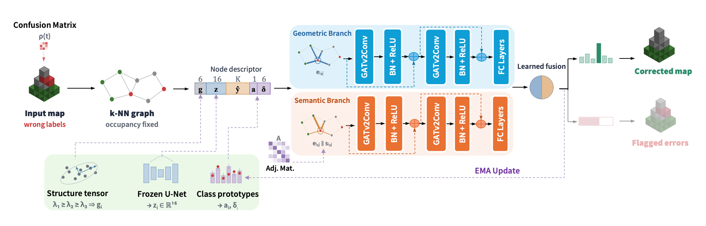
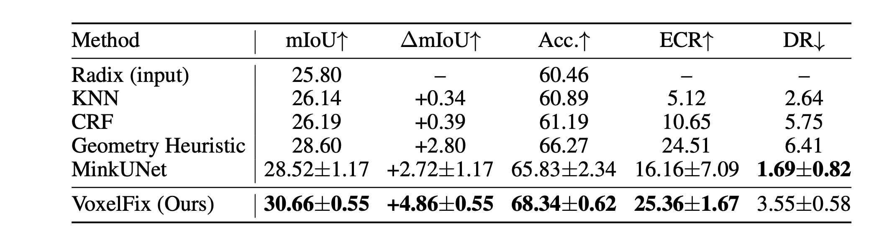
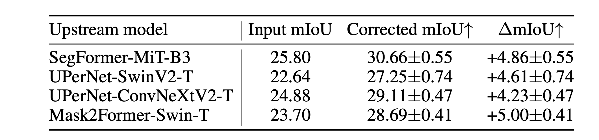
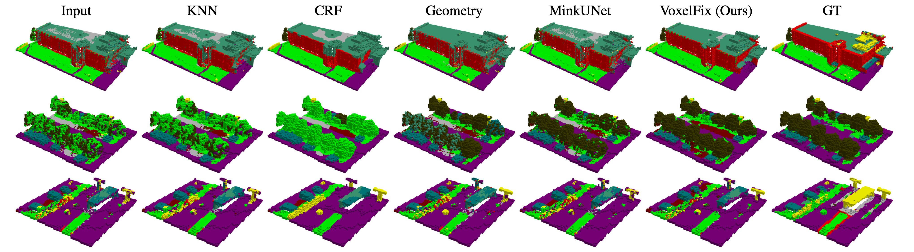
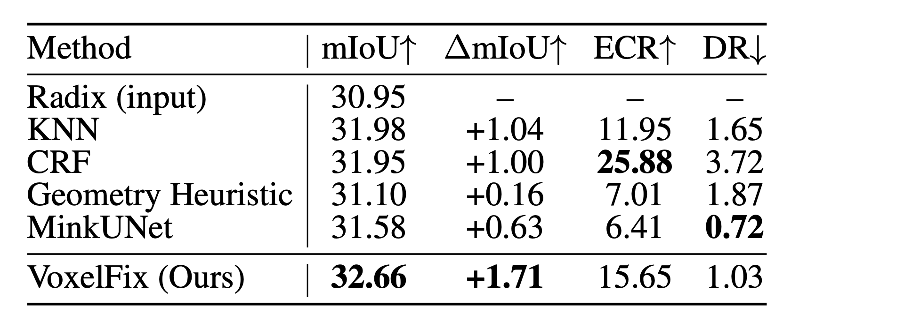
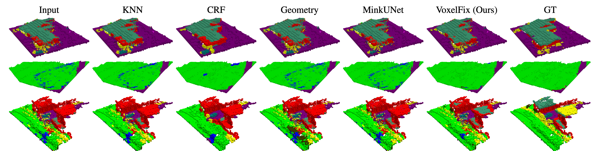

Noisy inputCompleted Radix map
Drag to orbit / Scroll to zoom
Semantic 3D maps are increasingly constructed automatically for aerial robotics by integrating learned semantic predictions into 3D representations. While this avoids costly manual 3D annotation, errors in the perception and mapping pipeline can persist in the resulting map, reducing its reliability for downstream autonomous tasks. Existing 3D semantic map refinement methods either rely on the original observations, treat occupancy as part of the prediction problem, or apply non-learned local regularization to completed maps.
Instead, we study post-hoc semantic correction, asking whether semantic accuracy can be recovered directly from the completed map while keeping its geometry and occupancy fixed. We introduce VoxelFix, a graph-based model that corrects voxel labels based on local geometry and neighboring semantic information. To obtain training pairs, we corrupt contiguous regions of annotated OccuFly maps according to class confusions observed in upstream maps.
We evaluate VoxelFix on completed OccuFly maps generated from predictions of four independently trained 2D segmentation models. VoxelFix consistently improves mIoU by 4.23-5.00 percentage points, with gains broadly distributed across the evaluated semantic classes and particularly strong improvements for tree, roof, and wall. Results on an independently reconstructed out-of-distribution aerial scene further suggest that the learned correction can transfer beyond the environments seen during training.






Inspect the results above in 3D. Select a scene and upstream model, then compare the input, VoxelFix output, and ground truth with synchronized cameras.
Counts show input / output / ground truth. Select a class to hide it.
@misc{sundarasami2026voxelfixposthocsemanticcorrection,
title = {VoxelFix: Post-Hoc Semantic Correction of Completed 3D Voxel Maps},
author = {Sunesh Praveen Raja Sundarasami and Taehyoung Kim and Johannes Scherer and Tomaž Cotič and Sivasubiramaniam Subbiah and Andreas Greiner and Paul Spannaus and Sebastian Houben},
year = {2026},
eprint = {2609.05114},
archivePrefix = {arXiv},
primaryClass = {cs.CV},
url = {https://arxiv.org/abs/2609.05114}
}